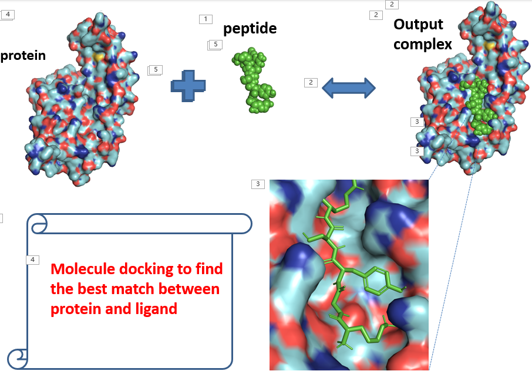
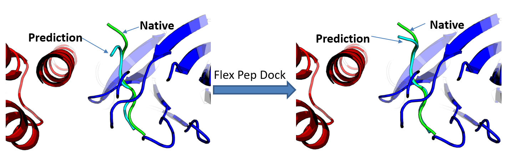

The carbonyl group, is a perfect electrophile, in this case, it is recognized as a partially positively charged group. But from some retrosynthetic plan, people found they already had an electrophile thus requiring the acyl group to act like an anion that needs to be partially negatively charged.
TMSCN as a masking group to acyl group
Without no doubt, as the number of rotatable bonds increase, the steps of the docking software need to calculte just sour high quicker in a exponential manner
It is unrealistic to go through all these time-consuming steps in a common docking software like Auto Dock or Auto Dock Vina, and many more ohters. The output result should be further optimised to improve the accuracy, for example the FlexPepDock is such a platform.
We are not going to dive deep to the mechanism of this protocal, but it should be fully aware this is not a peptide docking web server but a peptide docking output optimisation web server, which means you should do you peptide docking before hand by your in house software or ohter online dedicated tools for such purpose.
Step 1.Do you peptide docking some where else.
 The image shows that from a docking software or some online tools, one can get a general sense of how your peptide is likely to be bound to a certain protein. However, with all we have disscused before, the high flexibility of the peptide, together whith the fact that many docking algorithums do not consider the flexibility of the protein side chain, making the output confmation is not so trustful.
Step 2. Manuplate your docking result
Now time for real game. Let's say you got 3 plausible peptide docking result from any kind of docking software. What you need to do is to check whether the peptide and the protein in your output does exists as an individual chain or they are intergreted to a single one,there should be a "A" or "B" for each of them if you can open the output in any text reader. Please mannually asign a different chain name if they are all labled as "A" or whatever a single letter chain name, to another different letter.
You also need to refer to any PDB file to make your output a good begining and a good end in any text tool, for example you may need to type words like "Module" or "End"
Step 3. Submit the modified file to FlexPepDock
Now you just go through a quick resigter process on the web server and add your docking output to the server one by one. You are allowed to submit maximum 5 job at a time. You may need to wait for some time maybe 10 hours or a whole day until your job is done, depending on how long is the queue is.  Hope this image would give you some sense about before and after the FlexPepDock optimisation, it is obviously improved from a not aligned well position to a well aligned position as per on the right.
Further Reading
According to the offical illustration of the usage of this server, it is recommended that the output peptide backbone conformation should be with the range of 5.5 angstrom to the native conformation, so the server would gives out the final conformation falling within the range of 2.0 angstrom to native one. But it might not that useful message if you are testing a whole new peptide no one knows what on earth the native binding mode is.